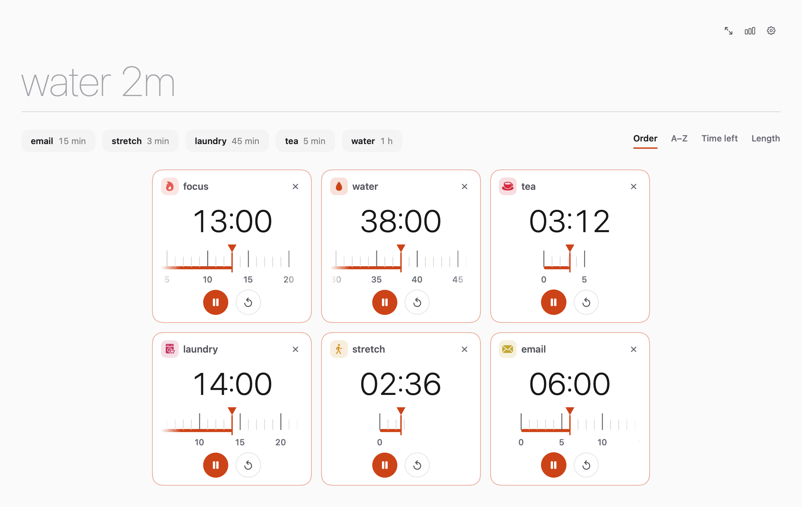
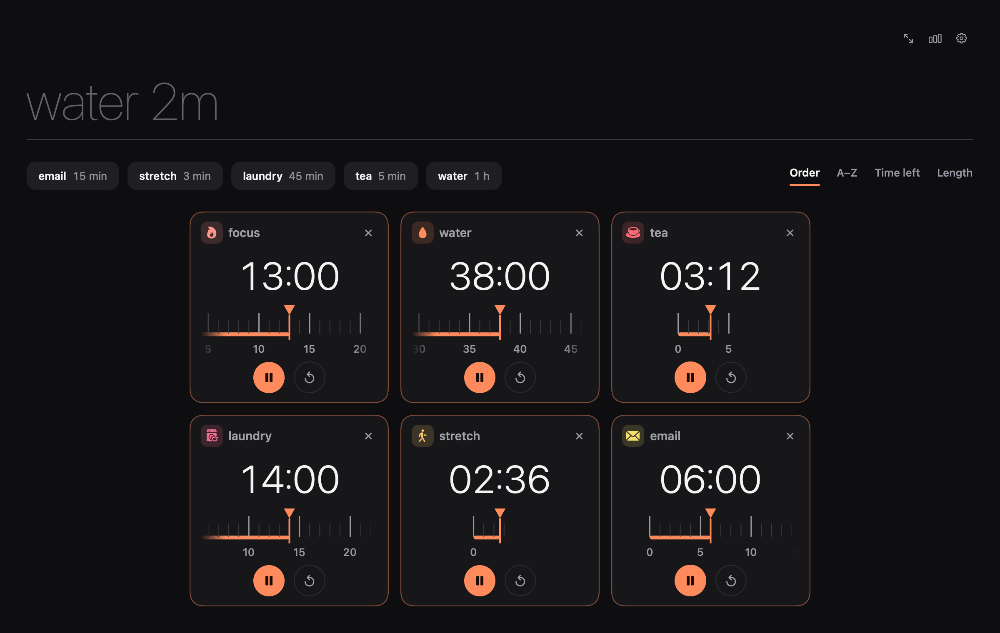
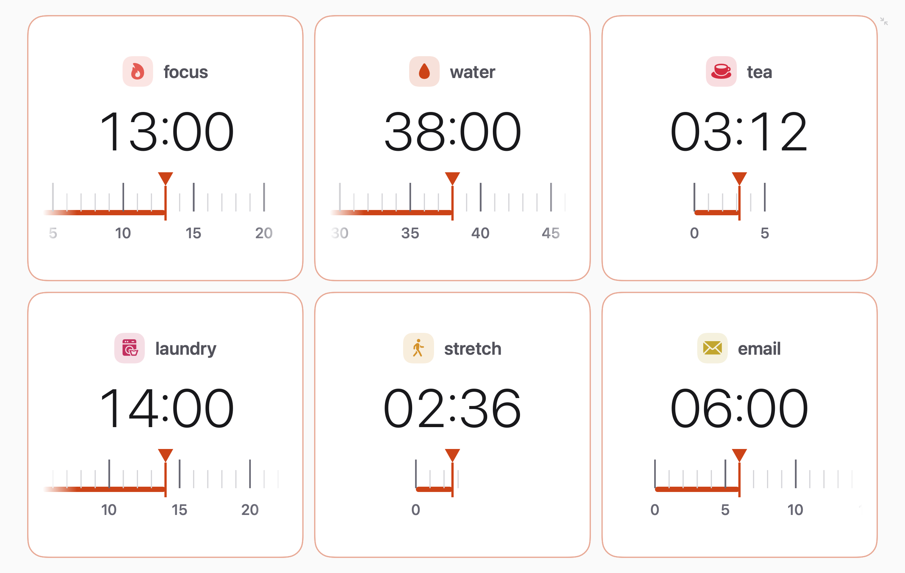
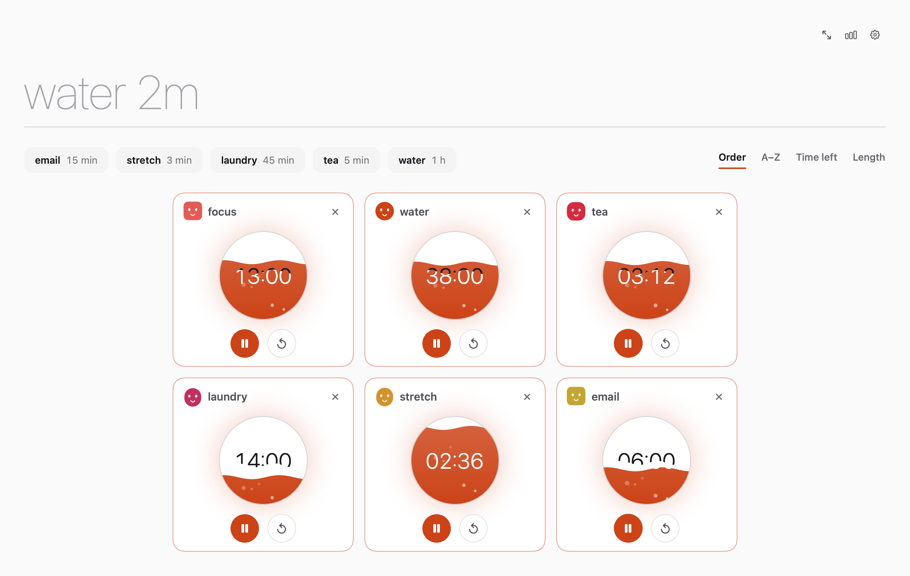
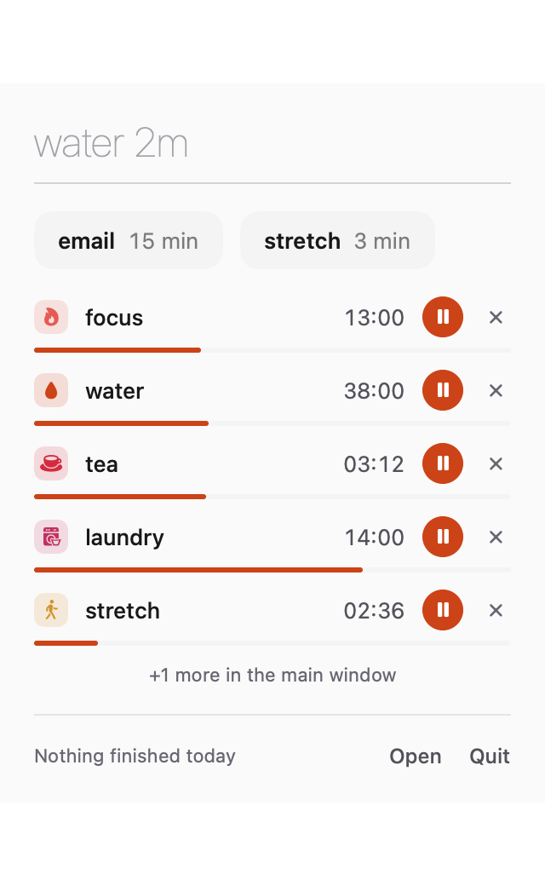

Timers that
feel good.
Type “water 2m”, press Return, done. A calm, native Mac timer: as many as you need, in one window.
macOS 14 or later · Apple silicon & Intel · Free and open source

Say it like a sentence
No pickers, no dials to wrestle. Ember finds the name and the time wherever they are.
water 2mwater · 2 minfocus 20minfocus · 20 min20 min focussame thing, any ordertea 1h30mtea · 1 h 30 mineggs 90seggs · 1 min 30 sstretch 1:30stretch · 1 min 30 sFive ways to watch time
Pick the one that suits your mood. Switching is instant, no restart.

Small things, done properly
One window, any number of timers
Cards resize to fill the space and never scroll. Fullscreen it, add another, they glide into place and stay razor sharp.
Quick timers that learn
Name a timer once and it becomes a one-tap chip. The ones you use most rise to the front.
Distraction-free
One click, or ten idle minutes, and everything but the timers fades away.
Impossible to miss
A finished timer pulses like a heartbeat and rings on repeat until you press ✓ or ↻.
A little personality
Optional glyphs for every timer: symbols, monograms, patterns, or little buddies that blink and beam when time is up.
Lives in the menu bar
Close the window and your timers keep running. A countdown and Dock progress show what’s due next.
Remembers everything
Running timers, quick timers, history and settings survive a quit or a restart.
Light by default
Dark and system modes, four accent colours, and sorting by order, name, time left or length.
Dark, focused, yours




Install
- DownloadGrab Ember.dmg from the latest release.
- Drag to ApplicationsOpen the disk image and drop Ember onto the Applications folder.
- Open it onceRight-click Ember, choose Open, then Open again.
Ember is signed ad hoc, not with a paid Developer ID, so macOS asks you to confirm the first launch. Or run xattr -dr com.apple.quarantine /Applications/Ember.app.